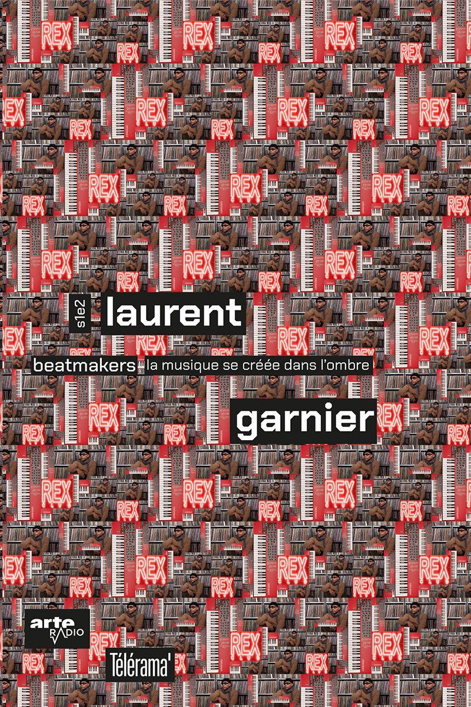
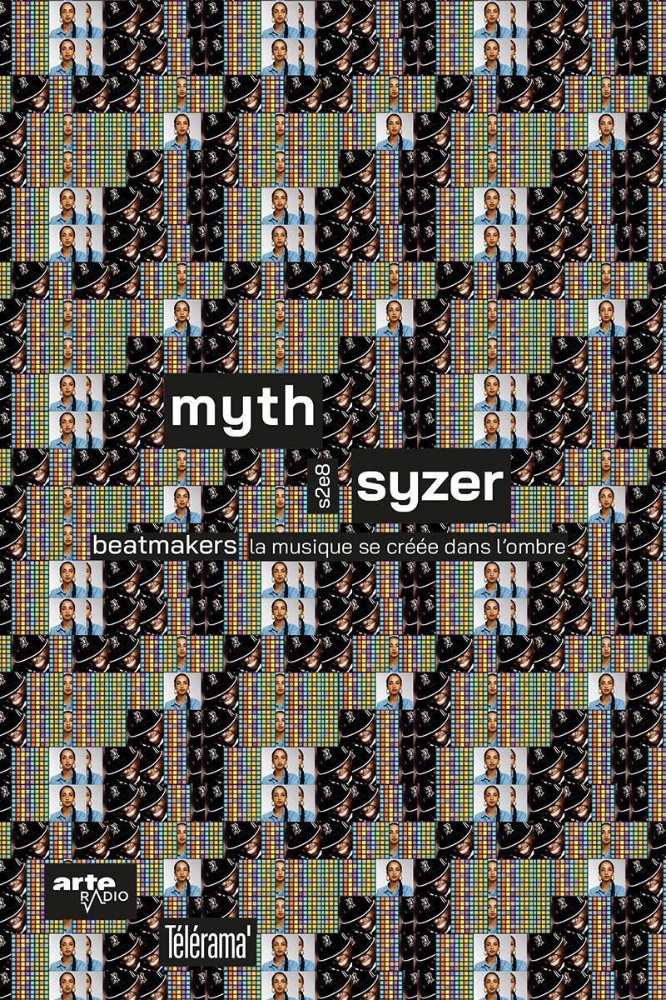
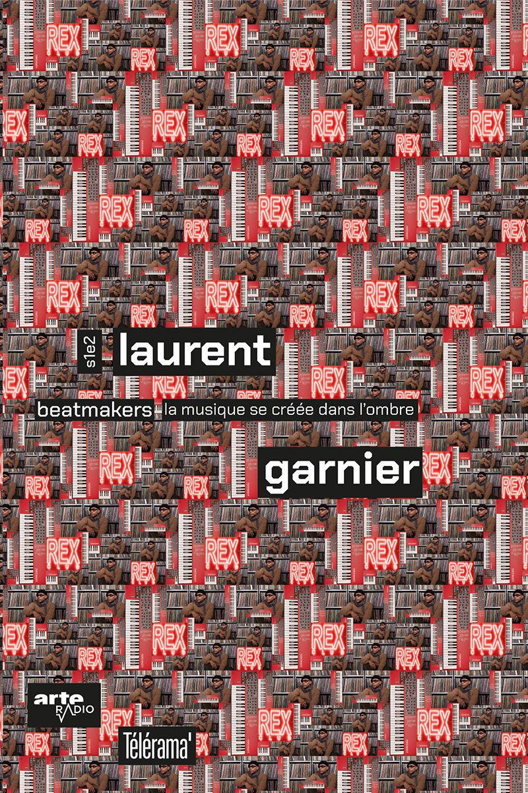
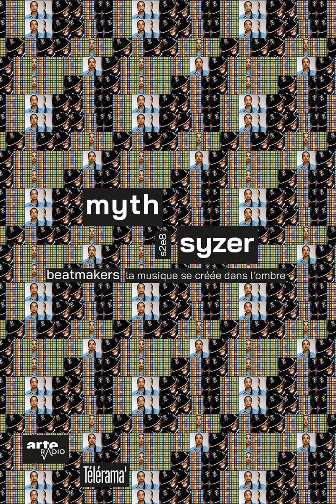

D’après la série de podcasts BEATMAKERS sur Arte Radio, il est question d’une création de livrets fictifs pour Télérama. Chacun retranscrit un épisode, qui est consacré à un beatmaker français, iconique, expliquant un de ses tubes.
Pour rendre compte de la pluralité des références de chaque artiste, j’ai exploité l’image du tissage. L’entremêlement des séquences de motifs donnent un rythme unique à chaque couverture.
[2023] Édition • Série de 3 livrets A5
 


